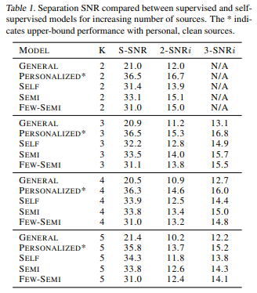

We consider a special case of the classical audio source separation problem, where (1) two microphones are in an
'earable' device worn at the ears,
and (2) the sources need to be separated by spatial regions around the head. The figure below shows an example
of spatial regions around the head; our goal is to output one source (or mixture of sources) from each region.
We propose a two-stage self-supervised framework with a pre-processing module in the first stage and a DNN in the second.
This framework does not assume knowledge of the number of sources, and importantly, leverages the spatial cues
provided by the user's personal head related transfer function (HRTF). Results show superior performance compared
to various baselines (including supervised models with generics HRTFs) and is slightly worse than the best possible
model that uses both personal HRTF and ground-truth based supervision.
Personal HRTFs are not available, hence it is challenging to synthesize training signals that embed the personal HRTF.
One possibility is to utilize real-world binaural recordings from earable devices which would naturally embed the
user's personal HRTF; of course, the problem is that such real-world recordings are not clean since they are
typically mixtures of multiple sources.
We propose a method to clean-up the real-world binaural recordings whenever possible, and show that this
"somewhat clean" data is adequate to train a region-wise source spearation model.
When the binaural recording is excessively contaminated, we realibly discard such data.
Hence, our model is self-supervised and leverages the inhherent spatial cues encoded in personalized HRTFs.
The figure below shows the two-stages of our framework. Thhe first stage accepts real-world binaural rrecordings as
input and employs our proposed signal processing-based spatial clustering method to isolate "relatively clean" spatial sources.
These sources form a personal database and is used to generate binaural training data by randomly mixing them to create
various spatial mixtures (of 2, 3, 4, and even 5 sources). This mixture dataset is then used to train a
dual-channel TasNet [1] architecture, adapted for region-based separation. The reference signals (for the loss function)
are the "somewhat clean" signals in our personal database, hence no clean labeled signal is necessary.
The spatial clustering method in stage one is based on the DUET [2] paper, which aims to cluster the time-frequency
bins by interaural time and level differences, as shown in the figure below. However this approach is challenging
in the binaural case due to spatial aliasing and unknown number of sources. We improve on DUET
to solve these problems; the detailed algorithm is available in our paper.
We intend to characterize the gains from personalised HRTFs (compared to general) and the loss from self-supervision
(compared to supervised methods where clean labeled data is available). Hence, we compare with several baselines
as follows:
GENERAL - Supervised model where training data is synthesized from generic HRTFs (from the CIPIC [3] HRTF database)
PERSONALIZED* - Supervised training where the personal HRTF (measured for few users) is used to create the training data
SELF - Self-supervised training with "somewhat clean" data, as proposed in this paper
SEMI - Same as SELF but with half of the sources being clean
FEW-SEMI - Same as SELF but with only 1 hour of training
Results below show that our self-supervised method closes the gap between GENERAL and the ideal PERSONALIZED* model.

We also compare between region based separation with classical all-source separation.
We only consider the case when there is only one speaker is the first region and compare the SNR for that single speaker.
All-source separation model is the same achitecture and is trained assuming known perosnal HRTF and known number of sources.
Even then, our self-supervised model can achieve a gain of around 25%.
Here are some (binaural) audio samples for listening. The "mixture" is the aggregate of all sounds as recorded by the
earphone. The rows denote each region and the columns denote the ground truth signal in that region, followed by the
various methods being compared. For example, row:R1 and col:Ground is the audio of the ground truth signal
arriving from region R1. This clip could be a single source, a mixture of few sources, or could be empty, depending on
the signals present in this region.
[1] C. Han, Y. Luo, and N. Mesgarani. Real-time binaural speech separation with preserved spatial cues. In IEEE International Conference on Acoustics, Speech and Signal Processing, pages 6404–6408. IEEE, 2020.
[2] O. Yilmaz, S. Richard. Blind Separation of Speech Mixtures via Time-Frequency Masking. In IEEE Transactions on Signal Processing. 2004.
[3] R. Algazi, R. Duda, D. Thompson, C. Avendano. THE CIPIC HRTF DATABASE. 2001.
 We propose a two-stage self-supervised framework with a pre-processing module in the first stage and a DNN in the second.
This framework does not assume knowledge of the number of sources, and importantly, leverages the spatial cues
provided by the user's personal head related transfer function (HRTF). Results show superior performance compared
to various baselines (including supervised models with generics HRTFs) and is slightly worse than the best possible
model that uses both personal HRTF and ground-truth based supervision.
We propose a two-stage self-supervised framework with a pre-processing module in the first stage and a DNN in the second.
This framework does not assume knowledge of the number of sources, and importantly, leverages the spatial cues
provided by the user's personal head related transfer function (HRTF). Results show superior performance compared
to various baselines (including supervised models with generics HRTFs) and is slightly worse than the best possible
model that uses both personal HRTF and ground-truth based supervision.